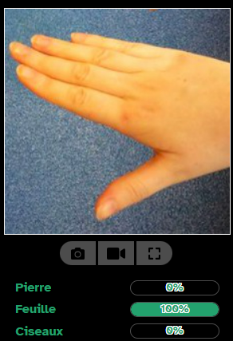
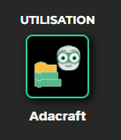
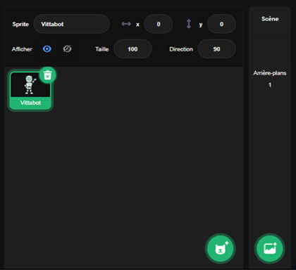

Section Démonstrations
IA de régression
IA de classification biclasse
Résultat :
IA de classification multiclasse
Résultat :
Cette prédiction est sure à X %
Cette activité permet de découvrir comment une IA est entraînée et pourquoi choisir les bonnes données est important. Elle est très guidée et permet de voir comment les données influencent l'apprentissage d'une IA.
Dans cette activité, vous allez découvrir un cas pratique : créer un programme qui utilise les prédictions d'une IA de Computer Vision pour modifier unaffichage.
La partie données permet d'utiliser des images pour entraîner votre IA.
Pour cela : ajouter des catégories et leur affecter des images dans la partie « Données ».

Une fois la catégorie créée, renommer la catégorie via le crayon. Trois façons d'ajouter des images :

Lorsque toutes les catégories sont prêtes, cliquer sur « Entraîner le modèle ».

Tester le modèle dans la partie « Aperçu ».

Après téléversement d'une image, les prédictions s'affichent. Vous pouvez aussi visualiser le réseau.
Une fois satisfait, passer à la partie programmation via « AdaCraft ».
La partie la plus utilisée de cette page web est la partie blocs. A la gauche de la page se trouve les différents blocs qui peuvent être utilisé pour programmer ainsi que leur catégorie. Au milieu se trouve votre environnement de travail : c'est ici que vous allez assembler les blocs pour faire un code fonctionnel.
Blocs essentiels :

En haut à droite : le résultat du code. Le drapeau vert permet de lancer le programme.

En bas à droite : gestion de l'arrière-plan et des objets.
Tout en haut à droite, vous pouvez appuyer sur la note de musique pour rajouter des sons, sur le pinceau pour pouvoir modifier les objets et changer leur apparence, et le "< / >" pour revenir sur la partie code.

Maintenant que les fonctionnalités principales du site sont expliquées, c'est à vous de faire votre propre projet!